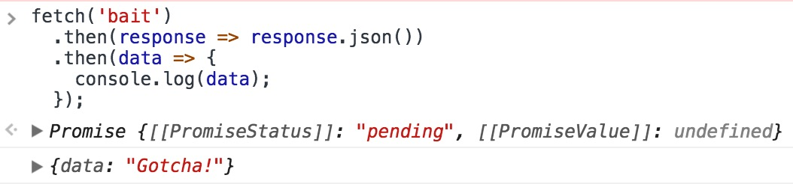
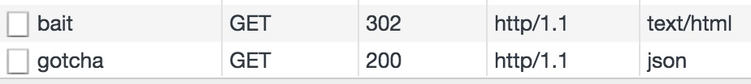
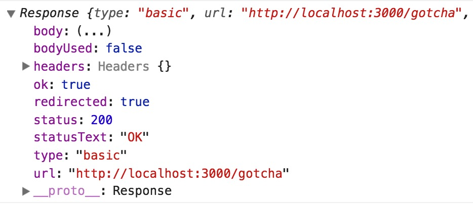

What will happen when fetch meets a 302 status code?
Yesterday, I was integrating SSO into a project. Originally, the backend would return 302 and with a location header to tell the browser to jump to the SSO page if the use is not logged in. It seems not a big deal, redicting to the right login page to save user a click. However, when I need to fetch some data from endpoint, the fetch will fail and the redirection wno’t happen.
So the first question is:
What will happen when fetch meets a 302 status code?
I just write a Koa toy app to test fetch with 302 response. In the backend, when it accepts a request for /bait, it will set the status code as 302 and add an HTTP header Location: /gotcha with the handy redirect method:
|
|
Now, if I issue a fetch action for the bait endpoint, the gotcha endpoint’s response will return:

Then check out the network requests, the first request is for /bait, which returns a 302, and the second is for /gotcha:

So, 302 is kind of transparent to fetch: we fetch an endpoint, the endpoint returns a 302, and the browser will help make the jump and return the final data to us. Here, by “kind of”, I mean that we can still find that the response is redirected and the final url where data returned:

The code is at my github, you can clone the repo and play with it.
The next question is:
What is the best practice to handle API that needs authenticaton?
Though fetch cannot capture the 302, it can handle HTTP response with 401 and 403. So you can make your API returns a 401 code, and with a response like this:
|
|
In the frontend, the code may look like the follow:
|
|
Most of the cases, the fetch snippet will show more than once and it’s impossible to require everyone to be considerate, thus better to wrap it in a utility function, with callbacks as parameters to handle different situations.
Summary
Just two points, as there’re two questions:
fetchcannot capture302, the browser will retrieve the data from theLocationheader of the302response.- In terms of authentication, the backend can return
401with proper data, and let the frontend check the status and take actions accordingly.